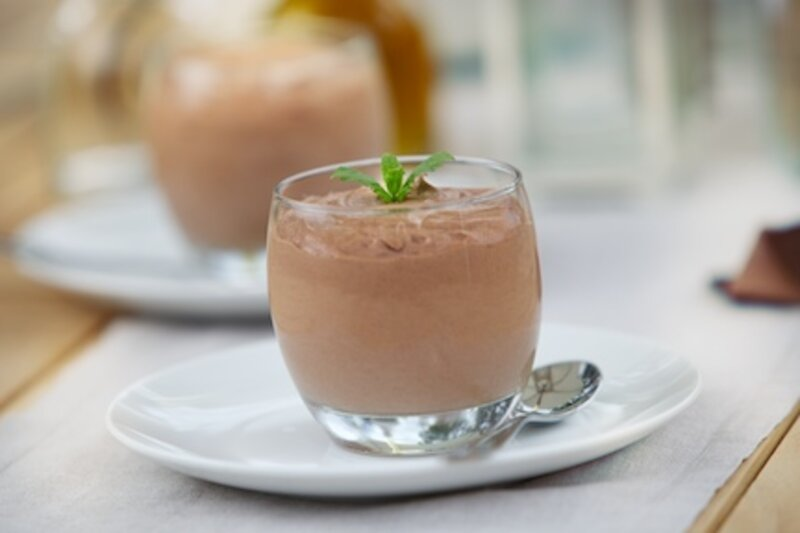
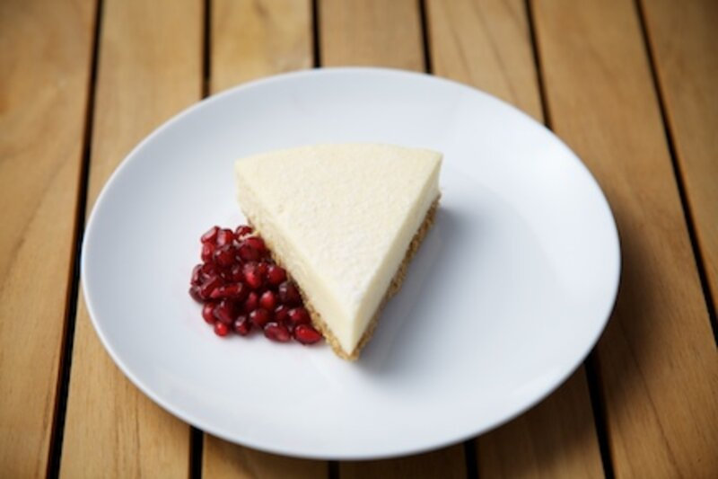
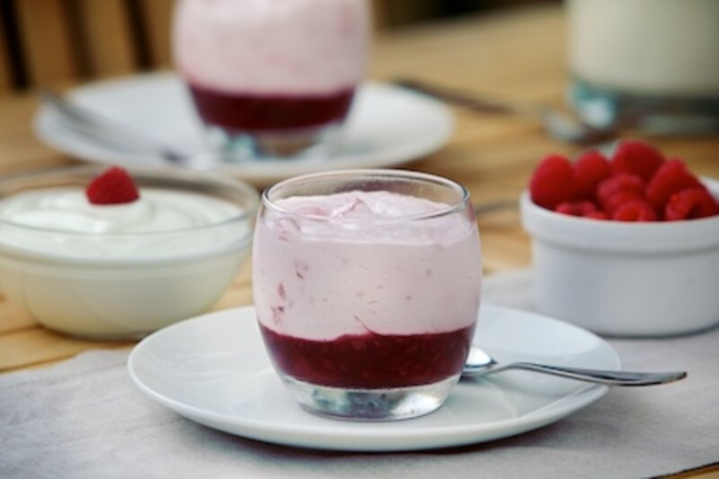
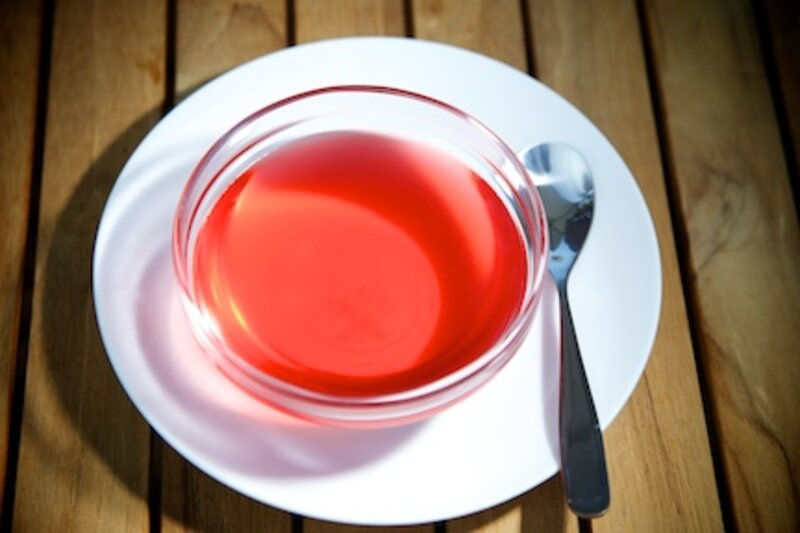
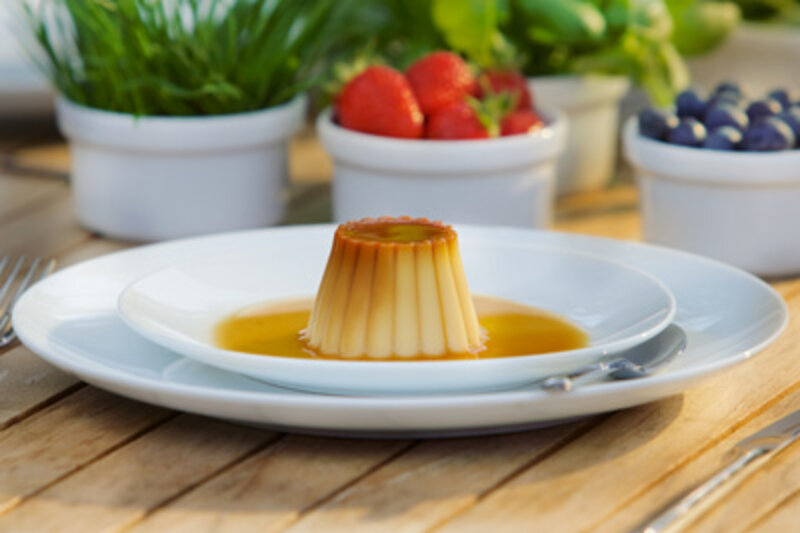
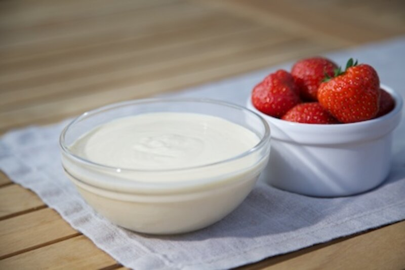
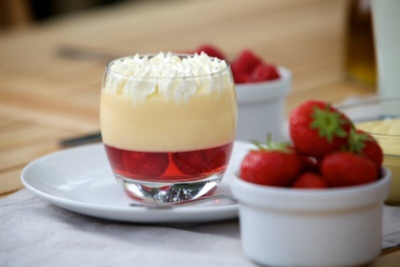
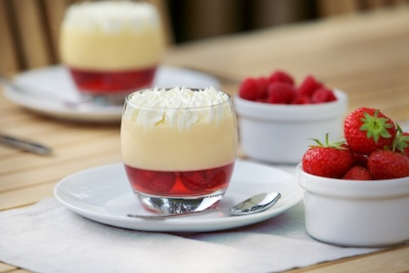

Product area
Desserts may be indulgent on-the-go treats or end of family meal favourites
Desserts appeal to young and old alike with a huge variety of choice. In the past, Honey and nuts would form the basis of any sweet treat. Now, modern desserts can ape traditional desserts from times past or give consumers a.
Puddings, trifles, mousse, pastries, Ice cream, Crumbles and Pies can all be classed as 'dessert'.
Manufacturers must deliver great food as well as products that are affordable, which is not always easy. Competitive pressure means points of difference are hard to come by.
KaTech can help you develop great tasting and consistent products whether you are looking to develop a luxury high end product or a more cost effective variation.
Applications
10 product types in this area.
Every one of these is a formulation route we have already walked. The detail page tells you what the product has to do and where the technical work usually sits.

Aerated desserts
Aerated desserts or 'Mousses' are extremely popular in modern times. It is a prepared food that.
Open
Cheesecake
Cheesecake is believed to have originated in ancient Greece, where records mention it being.
OpenFruchtmousse (German duplicate)
This page carries no content on the existing site.
Open
Fruit mousse
A mousse is a prepared food that incorporates air bubbles to give it a light and airy texture.
Open
Jelly
Open
Meringue
Meringue, is a type of dessert made from whipped egg whites and sugar, and occasionally an acid.
Open
Set dessert
Ready-to-eat set desserts continue to grow both in terms of the volume and value of sales.
Open
Sweet custard
Technically, sweet custard refers to an egg-thickened product; however, egg is expensive and.
Open
Trifle custard
Traditionally, trifle custard is made using milk, sugar and egg. Although this approach.
Open
Trifle jelly
Trifles have a long history, with their first recorded mention dating back to the 16th Century.
OpenBring us the product.
Tell us what it has to do, how it is produced and where it currently fails. We will tell you what is possible.